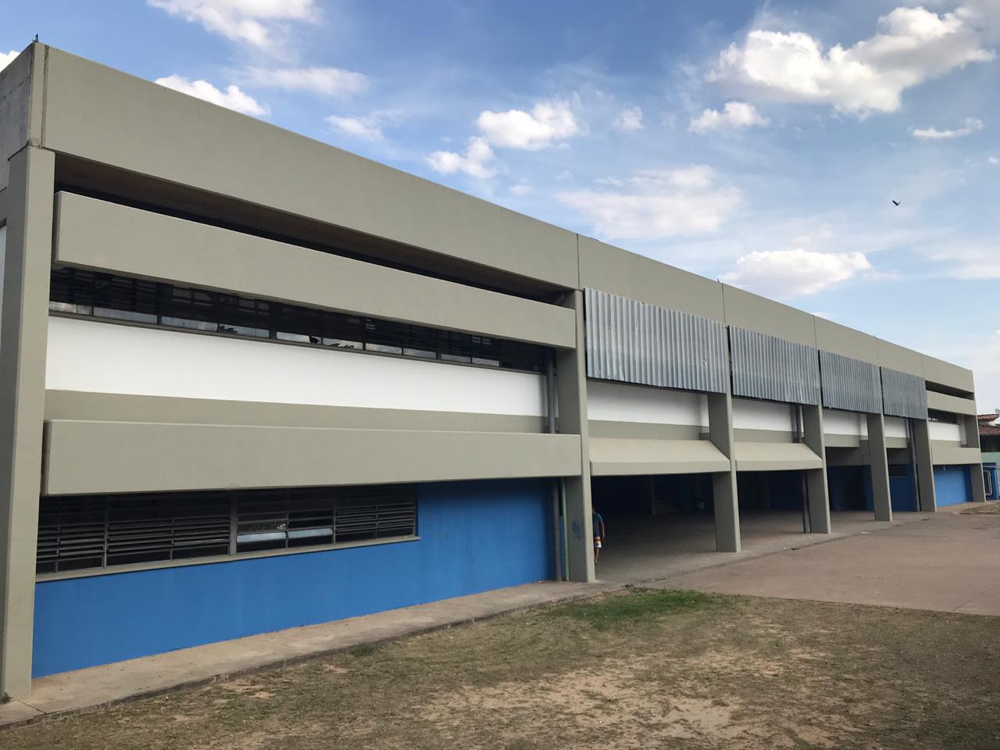

Sobre
A Escola Estadual Professora Maria Cristina de Souza Lôbo, foi criada em 2011 pelo Decreto 57.164 de 25 de julho de 2011, localizada à Rua Angra dos Reis, nº 130, Jardim Nova Europa, município de Hortolândia, pertencente a Diretoria de Ensino da Região de Sumaré-SP, atendendo a partir de 2021, alunos do Ensino Fundamental Anos Finais e Médio no Programa de Ensino Integral.
A construção da Proposta Pedagógica desta Unidade Escolar está em consonância com os princípios que regem a Lei de Diretrizes e Bases da Educação Nacional - LDB 9.394/96, Constituição Brasileira, BNCC, Currículo Paulista, Estatuto da Criança e do Adolescente, Parâmetros Curriculares Nacionais – PCNs, Diretrizes Curriculares Nacionais – DCNs, e Leis e Normas Educacionais do Estado de São Paulo.
CEP: 13184-862
Rua Angra dos Reis, nº 130
Jardim Nova Europa, Hortolândia - SP